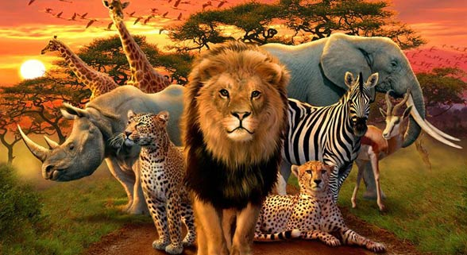
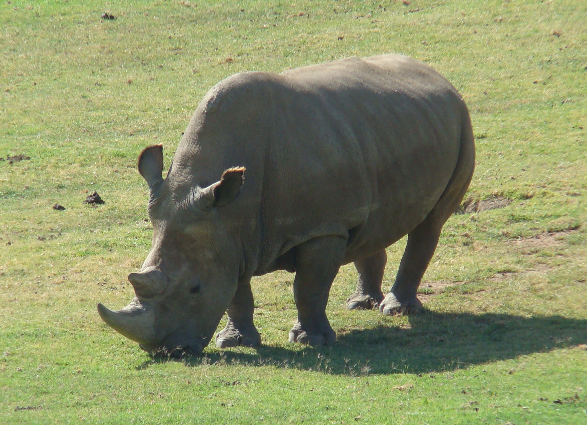
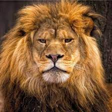
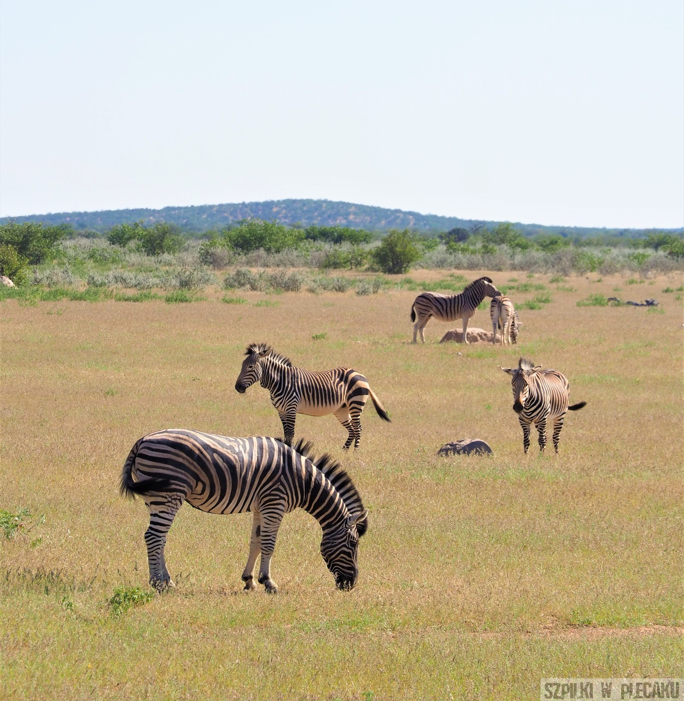
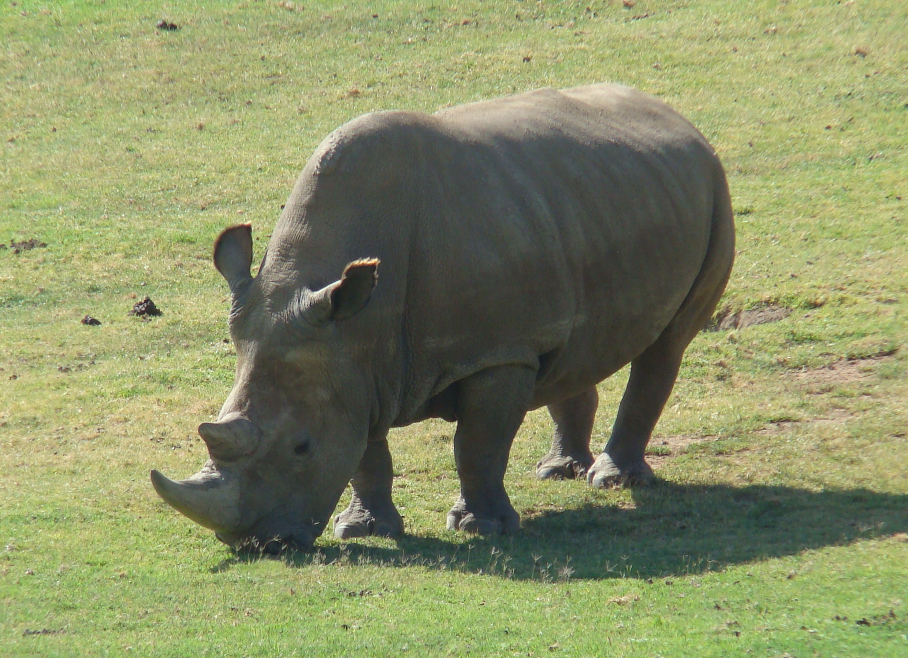
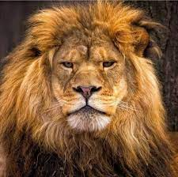
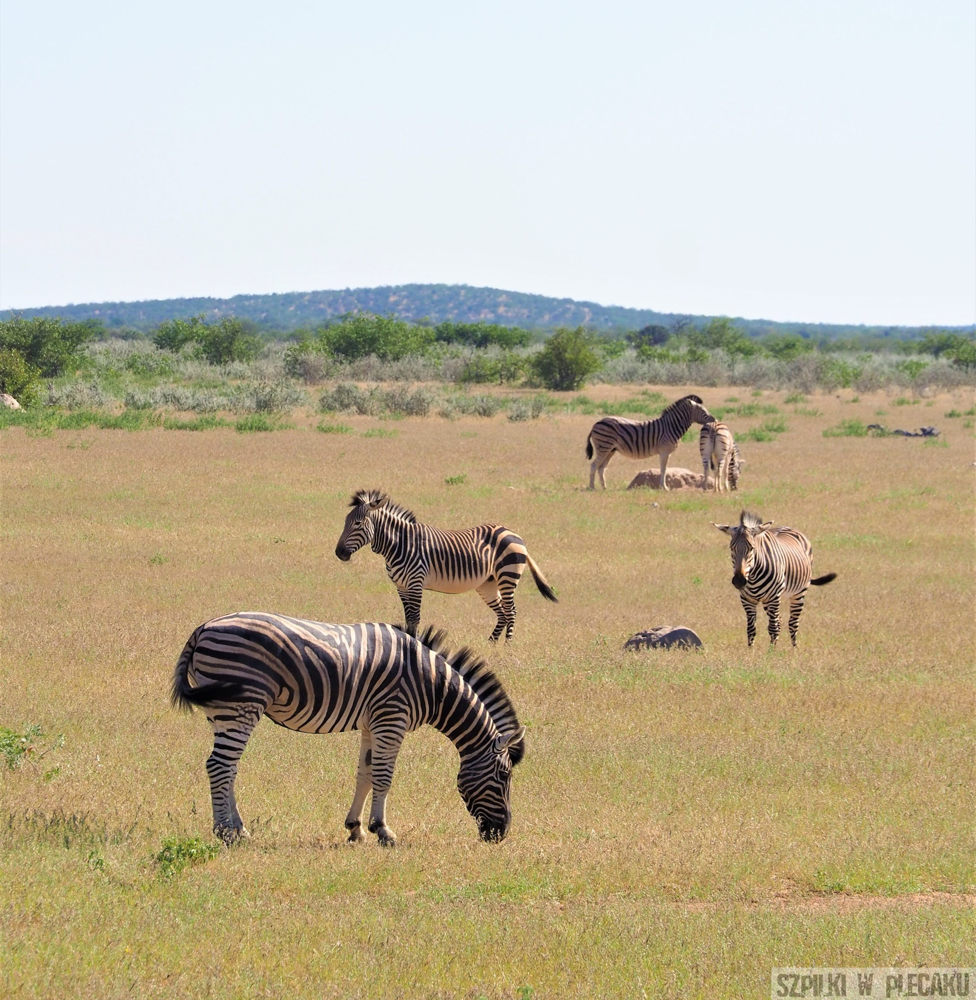

Poznaj zwierzęta !
Menu:
Poczytaj o zwierzętach Afryki
Afryka to miejsce niezwykłe pod wieloma względami. Na Czarnym Lądzie nie brakuje dzikich, pierwotnych obszarów, które pozostają we władaniu natury, nie człowieka. Tamtejsza przyroda, jakże odmienna od europejskiej, zachwyca niezwykłą florą, jednak jej największym bogactwem pozostaje fauna. Zwierzęta Afryki należą do najbardziej charakterystycznych na całym świecie.  To właśnie tam żyją najwięksi roślinożercy i najniebezpieczniejsze drapieżniki. Zapraszamy na wycieczkę po dzikim kontynencie. Gwoździem programu są najwspanialsi przedstawiciele tamtejszego królestwa zwierząt. Różnorodność - to słowo chyba najlepiej opisuje afrykańską faunę. O ile zwierzęta Antarktydy (z pominięciem bezkręgowców) ograniczają się do kilkudziesięciu gatunków ptaków i kilku gatunków ssaków lądowo-wodnych i wodnych, to zwierzęta Afryki mają znacznie bogatszą reprezentację. Opisanie wszystkich w jednej publikacji jest niemożliwe, dlatego poniżej skupiamy się na najciekawszych gatunkach, stanowiących wizytówkę tego niezwykłego miejsca.
 




